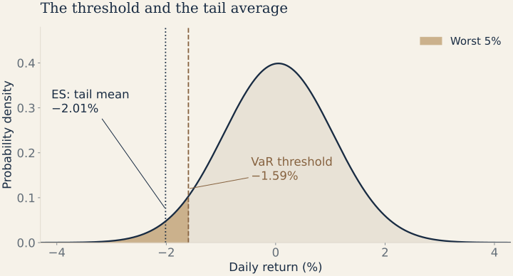

Expected Shortfall (ES) Estimation
Moving beyond Value-at-Risk: axiomatic coherence, tail risk severity, conditional expectation, and geometric intuition across return distributions.
From VaR to Coherent Risk Measures
While Value-at-Risk (VaR) serves as a standard industry benchmark, it possesses fundamental theoretical and practical limitations:
- Blindness to Tail Severity: VaR only identifies the threshold quantile cutoff $\text{VaR}_\alpha$. It provides zero information about how large losses can become once the boundary is breached.
- Non-Coherence & Diversification Failure: VaR can violate sub-additivity for some distributions, so the risk of a combined position can exceed the sum of its component VaRs. Non-normality alone does not imply a violation.

Axioms of Coherent Risk Measures
Let $X$ and $Y$ denote monetary payoffs (larger is better). A capital requirement $\rho$ is coherent when it satisfies the following four axioms. The signed tail-return average used below becomes such a risk measure after reversing its sign and expressing it in money.
If a payoff is no better in every state, its required risk capital is no smaller.
The capital requirement for combined payoffs cannot exceed the sum of their separate requirements.
Scaling portfolio position size scales the total risk exposure proportionally.
Adding sure cash capital $k$ directly reduces the required risk capital by exactly $k$.
Mathematical Formulation of Expected Shortfall
Expected Shortfall ($\text{ES}$)—also referred to as Conditional Value-at-Risk (CVaR) or Tail Value-at-Risk (TVaR)—averages the worst $1-\alpha$ fraction of outcomes. Here we keep the signed-return convention from the VaR note. For a continuous return distribution with a finite tail mean:
For distributions with probability mass at the quantile, use the quantile integral as the definition; conditioning on all observations at or below the threshold can include too much probability. The coherent monetary risk measure is $-V\,\text{ES}_\alpha$ for portfolio value $V>0$.
| Risk Dimension | Value-at-Risk ($\text{VaR}_\alpha$) | Expected Shortfall ($\text{ES}_\alpha$) |
|---|---|---|
| Core Question | "What is the minimum loss threshold expected on the worst $100(1 - \alpha)\%$ of days?" | "If we exceed the threshold, what is the expected average loss magnitude?" |
| Mathematical Nature | Single point quantile cutoff: $F^{-1}(1 - \alpha)$. | Integral average across the full distribution tail: $\frac{1}{1-\alpha}\int_\alpha^1 F^{-1}(1-u)\,du$. |
| Sub-additivity | May fail for some distributions; not a universal property of VaR. | Satisfied by the loss / capital version of ES when finite; equality is possible. |
| Sensitivity to Fat Tails | Insensitive to tail shape beyond the quantile. | Highly sensitive to tail thickness and extreme crash potential. |
The 2019 Basel market-risk standard specifies 97.5% Expected Shortfall for its internal models approach, with stress calibration and liquidity-horizon adjustments. VaR still has a role in backtesting; implementation depends on jurisdiction.
Worked example · same portfolio, deeper into the tail
How bad are the worst 5% of days?
Reuse the hypothetical €100,000 portfolio with daily $\mu=0.05\%$, $\sigma=1\%$, and normal returns. With $z=\Phi^{-1}(0.05)=-1.64485$ and standard normal density $\phi(z)\approx0.103136$:
| Measure | Signed return | Cash loss | Meaning |
|---|---|---|---|
| 95% VaR | −1.595% | €1,594.85 | Boundary of the worst 5% |
| 95% ES | −2.013% | €2,012.71 | Average within the worst 5% |
Takeaway: the conditional average loss is about €417.86 beyond the VaR threshold. ES is an average, so individual tail losses can still be larger.
Joint estimation: learning VaR and ES together
A quantity is elicitable if it uniquely minimizes an expected scoring loss. Over broad distribution classes, ES alone lacks this property, but the VaR–ES pair is jointly elicitable under suitable regularity conditions. This supports comparing pairs of forecasts with a consistent score.
Write $p=1-\alpha$ for the lower-tail probability, $v_t$ for signed-return VaR, and $e_t$ for signed-return ES. A commonly used score, for $e_t<0$ and $e_t\le v_t$, is:
The factor $p$ in the first denominator is essential. Minimize the average score on training data and compare mean scores on unseen data using the same probability and return units. A lower realized average is evidence about relative forecast performance, not proof of calibration.
The asymmetric Laplace connection
The asymmetric Laplace working density connects quantile regression to likelihood-based estimation. For scale $s_t>0$ and pinball loss $\rho_p(u)=u[p-\mathbb{I}(u<0)]$:
At the true conditional quantile, the expected pinball loss satisfies $s_t=p(\mu_t-e_t)$, where $\mu_t$ is the conditional mean. Thus $e_t=\mu_t-s_t/p$; for demeaned returns this becomes $e_t=-s_t/p$. A semiparametric approach can use this connection without requiring actual returns to follow an asymmetric Laplace distribution. The scale is linked to ES; it is not the return standard deviation.
Validating ES forecasts
Counting VaR exceptions does not assess their severity. For continuous distributions, correctly specified conditional forecasts satisfy two useful moment conditions:
Both have conditional expectation zero. Persistent means or predictability from past information can reveal misspecification. Formal inference must account for estimation uncertainty and time dependence. Regression-based ES backtests require their own assumptions. These residuals are an explanatory diagnostic, not a substitute for implementing a formal test correctly.
Extending the forecast model with an LSTM
A recurrent network can output $(v_t,e_t)$ from historical returns and other past information, then learn by minimizing a joint score. A parameterization such as $v_t=-\operatorname{softplus}(a_t)$ and $e_t=v_t-\operatorname{softplus}(b_t)$ enforces negative, ordered forecasts when that domain is appropriate. Greater flexibility brings more estimation uncertainty, especially with few tail observations. Compare against simple baselines using rolling forecasts and the same scoring rule; an LSTM does not automatically improve tail accuracy.
Study checkpoint: distinguish confidence $\alpha$ from tail probability $p=1-\alpha$, signed returns from cash losses, and a good average score from a calibrated risk forecast.